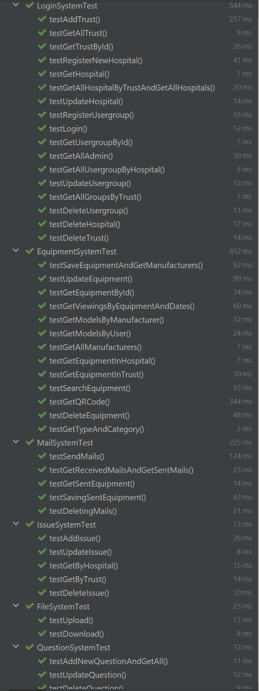
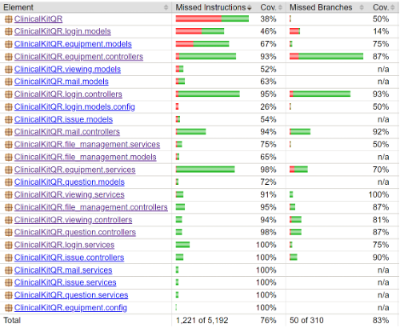

We have used Junit 5, a popular testing framework to test our
Spring Boot application. After performing unit and integration
test to the application, we used JaCoCo library to check the code
coverage of these testing.
Unit tests are written for our controller, they are written to
test all functions inside a controller, which will be used to
handle HTTP requests sent from the frontend. This is very
important as if an error occurred when our backend is handling
request, the response with the error will be returned to our
frontend. An example can be if the backend somehow returned
nothing when the user requested to get the data of an existing
equipment education page. This will hurt the reliability of our
system.
Most unit tests are conducted in the following strategy: first
make up some data, if necessary, then use controller to call then
function which we are testing. After the function returns the
result, we will assess the correctness of result.
testEquipment = equipmentController.getById(testEquipment.getEquipmentId(),testUser.getHospitalId().getHospitalId(),testUser.getUsername());
assertEquals("updated",testEquipment.getContent());
assertEquals("updated equipment",testEquipment.getName());
assertEquals("Gastrointestinal",testEquipment.getType());
assertEquals("Neonatal",testEquipment.getCategory());
assertEquals("TEST-4",testEquipment.getModel().getModelName());
assertEquals("Test Manufacturer",testEquipment.getModel().getManufacturer().getManufacturerName());
(A section of code from testing get equipment education page by
id)
If the function is void which means the function does not return
anything, we will assess the status of the database after the
function is performed via service. As functions such as saving and
deleting entities usually does not return anything. We therefore
need to check our database has saved or delete the entity or not.
int originalHospitalSize = hospitalService.getAll().size();
hospitalController.register(trust.getTrustId(),"Test Hospital");
assertEquals(originalHospitalSize+1,hospitalService.getAll().size());
testHospital = hospitalService.findAll().get(originalHospitalSize);
//since the new hospital will have the latest ID + 1 as its id
assertEquals(testHospital.getHospitalName(),"Test Hospital");
A section of code from testing register new hospital

The tests we wrote used a hybrid approach for unit and integration
testing. We tested controllers in terms of system, a system will
have one or more controllers. For instance, the login system uses
trust controller, hospital controller and user group controller.
When we are testing the functions of controller, we are also
testing the data transfer between entities in controller.
int originalSize = mailService.getAll().size();
int originalSentEquipmentSize = sentEquipmentService.getAll().size();
mailController.send(admin1.getHospitalId().getHospitalId(),admin1.getUsername(),receiverInfo,"test mail","test",time,equipmentIds);
//test sending a sharing from admin 1 to admin 2 and 3 with multiple equipments shared
assertEquals(originalSentEquipmentSize+6,sentEquipmentService.getAll().size());
assertEquals(originalSize+3,mailService.getAll().size());
The example above shows the principle of our integration testing.
When a sharing that contains two equipment is sent from one person
to the other two person, not only that there are three Mail object
created and saved to database. But there are also six
SentEquipment objects created and saved to database. When doing
unit testing, we will not assert the status of SentEquipment
database, but for integration testing we will assert both Mail and
SentEquipment when a sharing is sent as they both belongs to
sharing system.
By using both tests, we found by using JaCoCo the code coverage of
controllers and services is on average 95%.

The reason why we did not count models’ coverage is because
models’ functions may not be used in services and controllers
while it is necessary to be there. An will be for
UserGroupPrimaryKey, it is used for specifying the composite
primary key for the UserGroup object, the getter and setter
functions of this class is not used in the code at all but it is
necessary to be there.